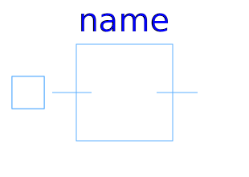
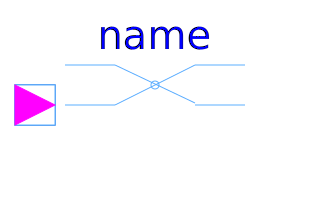
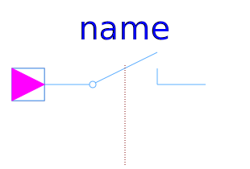

This package hosts ideal models for quasi stationary single phase circuits. Quasi stationary theory for single phase circuits can be found in the references.
| Name | Description |
|---|---|
|  Idle | Idle branch |
| Short cut branch | |
|
|
Ideal commuting switch |
|  IdealIntermediateSwitch | Ideal intermediate switch |
|  IdealOpeningSwitch | Ideal electrical opener |
|
|
Ideal electrical closer |
|
|
Ideal transformer |